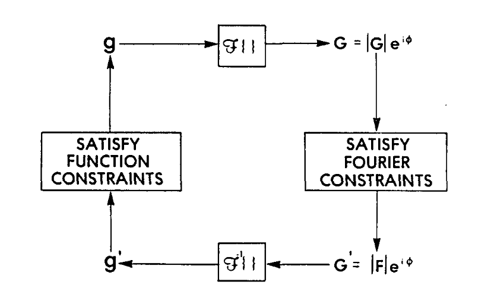

(Top)
Part of a series on Phase retrieval
One of the first successful algorithms for phase retrieval is the Gerchberg-Saxton algorithm. GS aims to determine “the complete wavefunction from intensity recordings in the image & diffraction planes” (1). The intensity recordings \(|f(\mathbf{x})|^2\) (for the image plane) and \(|F(\mathbf{k})|^2\) (for the diffraction plane) act as constraints in each domain, and the algorithm transforms between the two domains while repeatedly applying the constraints to the guess. GS forms the basis for many following phase retrieval algorithms, especially in the the scheme of switching between the real and reciprocal domains.
As originally formulated, GS uses intensity recordings in both planes and recovers only the phases. Because I will mainly focus on microscopy, an object-plane intensity measurement is impractical. Instead the object plane constraint is easily replaced with the aperture, i.e. a mask of the object plane where the wavefront must be zero.
Algorithm
Gerchberg, R. W. & Saxton, W. O. A Practical Algorithm for the Determination of Phase from Image and Diffraction Plane Pictures. Optik 35, (1972).
Fienup, J. R. Phase retrieval algorithms: a comparison. Appl. Opt., AO 21, 2758–2769 (1982).
The essence of GS is given in the block diagram below.

Block diagram of the error-reduction (Gerchberg-Saxton) algorithm.
Figure from (2).
- Start with a guess \(g_n(\mathbf{x})\)
- Propagate to diffraction plane \(G_n(\mathbf{k}) = \mathcal{F}[g_n(\mathbf{x})]\)
- Replace (denoted with prime) the amplitudes with the measured ampliudes \[G_n(\mathbf{k}) = |G_n(\mathbf{k})|\exp(i\phi_n(\mathbf{k})) \quad\rightarrow\quad G^\prime_n(\mathbf{k}) = |F(\mathbf{k})|\exp(i\phi_n(\mathbf{k}))\]
- Backpropagate \(g^\prime_n(\mathbf{x}) = \mathcal{F}^{-1}[ G^\prime_n(\mathcal{k}) ]\)
- Apply the mask \(\mathbf{x} \in M : \quad g^\prime_n(\mathbf{x}) \ \rightarrow \ 0\)
- This is the ‘new’ guess object \(g_{n+1}(\mathbf{x})\)
Convergence - GS as error reduction
As an iterative algorithm, it is natural to think about its convergence. Mimicking Fienup’s notation (2), we define the Fourier sum-squared error \(E^{F}\) for iteration \(n\) as:
\[ \begin{align} E^{F}_{n} &\equiv \frac{1}{N^{2}} \sum_{\mathbf{k}} \left| G_{n}(\mathbf{k}) - G_{n}^{\prime}(\mathbf{k}) \right|^{2} \\ \\ &= \frac{1}{N^{2}} \sum_{\mathbf{k}} \left| [ |G_{n}(\mathbf{k})| - |F(\mathbf{k})| ] e^{i\phi_{n}(\mathbf{k})} \right|^{2} \\ \\ &= \frac{1}{N^{2}} \sum_{\mathbf{k}} \left| |G_{n}(\mathbf{k})| - |F(\mathbf{k})| \right|^{2} \end{align} \]
Where the \(N^2\) term is included by the convention choice of Fourier transform. The object sum-squared error \(E^{O}\) is defined similarly:
\[ \begin{align} E^{O}_{n} &\equiv \sum_{\mathbf{x}} \left| g_{n+1}(\mathbf{x}) - g^{\prime}_{n}(\mathbf{x}) \right|^{2} \\ \\ &= \sum_{\mathbf{x} \in M} \left| \cancel{g_{n+1}(\mathbf{x})} - g^{\prime}_{n}(\mathbf{x}) \right|^{2} + \sum_{\mathbf{x} \not{\in} M} \left| \cancel{g_{n+1}(\mathbf{x}) - g^{\prime}_{n}(\mathbf{x})} \right|^{2} \\ \\ &= \sum_{\mathbf{x} \in M} \left| g^{\prime}_{n}(\mathbf{x}) \right|^{2} \end{align} \]
In other words, \(E^F\) is the distance to satisfying the measured amplitudes (the reciprocal-space constraint), and \(E^O\) is the distance to satisfying the mask \(M\) (the real-space constraint).
\[ \begin{align} E^{F}_{n} &\equiv \frac{1}{N^{2}} \sum_{\mathbf{k}} \left| G_{n}(\mathbf{k}) - G_{n}^{\prime}(\mathbf{k}) \right|^{2} \\ \\ &= \sum_{\mathbf{x}} \left| g_{n}(\mathbf{x}) - g^{\prime}_{n}(\mathbf{x}) \right|^{2} \end{align} \]
In the expressions for \(E^F\) and \(E^O\), both \(g_{n}(\mathbf{x})\) and \(g_{n+1}(\mathbf{x})\) satisfy the object constraint. Here we take advantage of the fact that \(g_{n+1}(\mathbf{x})\) is defined as the closest value to \(g^\prime_n(\mathbf{x})\) of those that satisfy the object constraint. So, by definition,
\[ E_n^O = \sum_{\mathbf{x}} \left| g_{n+1}(\mathbf{x}) - g^{\prime}_{n}(\mathbf{x}) \right|^{2} \le \sum_{\mathbf{x}} \left| g_{n}(\mathbf{x}) - g^{\prime}_{n}(\mathbf{x}) \right|^{2} = E_n^F \]
Similarly applying Parseval’s theorem to the object error,
\[ \begin{align} E^{O}_{n} &\equiv \sum_{\mathbf{x}} \left| g_{n+1}(\mathbf{x}) - g^{\prime}_{n}(\mathbf{x}) \right|^{2} \\ \\ &= \frac{1}{N^{2}} \sum_{\mathbf{k}} \left| G_{n+1}(\mathbf{k}) - G^{\prime}_{n}(\mathbf{k}) \right|^{2} \end{align} \]
Compare this to the next iteration’s Fourier error:
\[ E^{F}_{n+1} = \frac{1}{N^{2}} \sum_{\mathbf{k}} \left| G_{n+1}(\mathbf{k}) - G_{n+1}^{\prime}(\mathbf{k}) \right|^{2} \]
Again, both \(G^\prime_{n}(\mathbf{k})\) and \(G^\prime_{n+1}(\mathbf{k})\) satisfy the Fourier constraint, but \(G^\prime_{n+1}(\mathbf{x})\) is definitionally closest to \(G_{n+1}(\mathbf{k})\). Therefore,
\[ E^{F}_{n+1} = \frac{1}{N^{2}} \sum_{\mathbf{k}} \left| G_{n+1}(\mathbf{k}) - G_{n+1}^{\prime}(\mathbf{k}) \right|^{2} \le \frac{1}{N^{2}} \sum_{\mathbf{k}} \left| G_{n+1}(\mathbf{k}) - G^{\prime}_{n}(\mathbf{k}) \right|^{2} = E^O_n \]
Combining both inequalities, we find that the error decreases monotonically each iteration.
\[ E^F_{n+1} \le E^O_n \le E^F_n \]